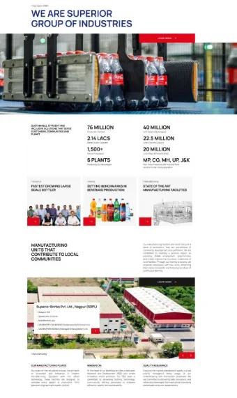
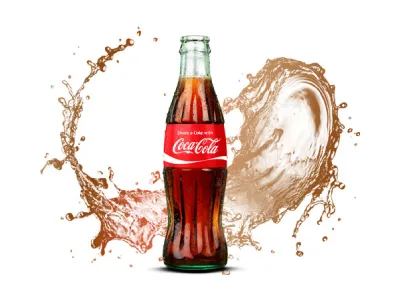
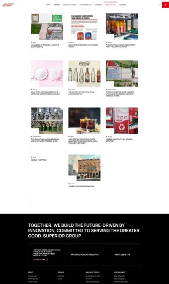
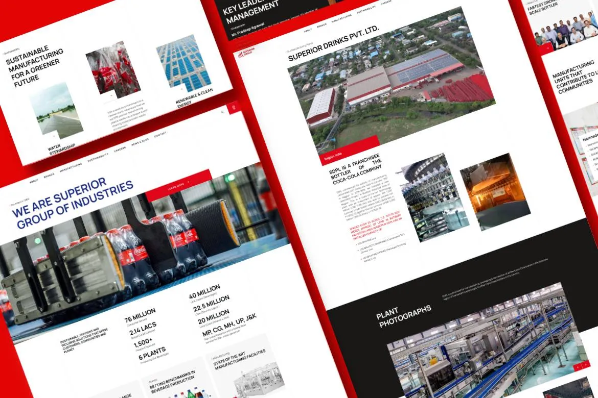

Strategic Digital Transformation for Superior Group
One of the biggest Coca-Cola bottlers in the world, with a distribution network that includes 200k outlets, 1,500 employees, and a turnover of over ₹4,000 crores. runs six state-of-the-art manufacturing facilities in India.
The company needed a contemporary, scalable website that clearly conveys its history, offerings, and market impact in order to strengthen its digital presence and better connect with stakeholders across the beverage industry.
We at Cloud Converge made sure the company’s digital transformation went beyond creating websites. To keep everything functioning properly, we offered continuous support, which included frequent content updates, system integrations, and performance enhancements. We assisted the business in creating a powerful online presence while preserving operational effectiveness by putting in place a scalable and high-performing digital solution.

User Experience Design & Backend Integration
The website was made with mobile devices in mind, so it works flawlessly on all of them. All users, from corporate stakeholders to retail partners, were to have an easy-to-use and entertaining experience.
The design, which blends tradition and contemporary innovation, represents the business’s polished image. While thorough product and service pages foster engagement and trust, important sections like “About Us,” “Our Brands,” and “Awards & Recognition” showcase the company’s background, accomplishments, and industry credibility.
A strong content management system (CMS) was integrated on the backend, making it simple for the team of the company to publish announcements, manage product listings, and update content. To guarantee quick loading times and a seamless user experience, performance optimization strategies like image compression and caching were used.
Conclusion & Feedback
The new website improved market positioning, streamlined communication, and greatly increased brand visibility. The company strengthened its leadership in the global beverage industry and increased stakeholder engagement by providing a high-performance, content-driven digital platform.